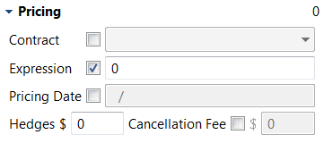

This section allows the pricing structure of the transaction to be specified, with inputs being:
|
Contract |
If the “Contract” checkbox is checked, you can determine the transaction price by choosing a particular contract, which will calculate price based on various factors. |
|
Expression |
If the “Expression” checkbox is checked, you can determine the price for this transaction directly, either as a given number of USD per mmBtu, or as a mathematical expression involving one or more industry indices. You must specify either a contract or a price expression. |
|
Pricing Date |
If this checkbox is checked, you can specify a date on which the price for the transaction is based, which is different from the date the transaction actually occurs on. If the checkbox is unchecked, the date for calculating the price will be the actual date of the transaction. |
|
Hedges |
This field allows you to specify a profit & loss term which is linked to the selected slot (whether it is used or not); the value may be either positive (profit) or negative (loss). This term will not affect the decisions made by the optimiser, but will be reflected in profit & loss reports. |
|
Cancellation Fee |
This field allows you to specify a cost which must be paid if the slot is not used. |
NOTE: This section will also include any contract-specific options for the slot.